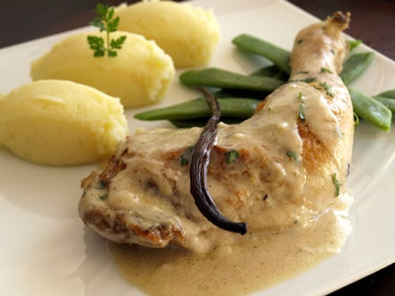

Le poulet à la vanille
Une recette original

Ingrédients
- 4 blancs de poulet
- 2 tomates
- 1 citron vert
- 1 oignon
- 1 gousse d'ail
- 30 cl de lait de coco
- 1 cuillère à soupe de gingembre frais râpé
- 2 cuillère à soupe de noix de coco rapée
- 1/2 gousse de vanille
- 30 g de beurre
- 2 cuilléres à soupe de curry
- poivre
- sel
Préparation
- Pelez, épépinez et concassez les tomates. Mélangez avec l'ail et l'oignon ciselés, le gingembre, le jus du citron et le curry.
- Emincez le poulet en lanières, puis laissez le mariner dans la preparation precedente 30 mn.
- Cuisez le tout dans le beurre pendant 8 minutes puis arrosez du jus de coco. Ajoutez la gousse de vanille détaillée en morceaux. Salez et poivrez.
- Faites mijoter pendant 20 mn à feu doux et à découvert. Parsemez de noix de coco râpée et servez.